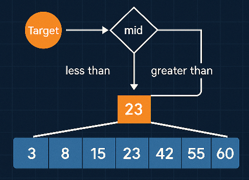
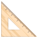
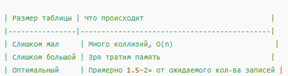
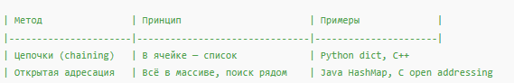
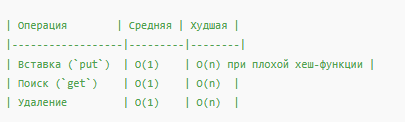

Двоичный поиск: алгоритм, примеры на C и Python, нюансы использования
Начинаем цикл статей, где можно будет простыми словами изучить алгоритмы.
Данный цикл полезен будет для подготовки к собесам и если вы хотите изучить базовые алгоритмы и структуры данных.
Будем рассматривать питон и Си.
А также сравнительный анализ этих языков для решения алгоритмических задач.
 Двоичный поиск: алгоритм, примеры на C и Python, нюансы использования
Двоичный поиск: алгоритм, примеры на C и Python, нюансы использования

- Что делать, если у вас отсортированный массив, и нужно быстро найти элемент?
- Правильный ответ: применить двоичный (бинарный) поиск.
- Он работает в логарифмическом времени: O(log₂ n).
- Это один из базовых, но при этом часто используемых алгоритмов в программировании.
Что такое двоичный поиск?
Представьте, что вы ищете слово в словаре. Вы не листаете по одной странице — вы раскрываете словарь в середине, смотрите, в каком направлении двигаться — и снова делите пополам.
Вот так же работает и двоичный поиск.
 Условие: данные должны быть уже отсортированы по возрастанию или убыванию. Принцип: делим массив пополам, сравниваем с серединой, исключаем половину, повторяем.
Условие: данные должны быть уже отсортированы по возрастанию или убыванию. Принцип: делим массив пополам, сравниваем с серединой, исключаем половину, повторяем.Пример на языке C
C:
#include <stdio.h>
int binary_search(int arr[], int size, int target) {
int left = 0, right = size - 1;
while (left <= right) {
int mid = left + (right - left) / 2;
if (arr[mid] == target)
return mid; // нашли!
else if (arr[mid] < target)
left = mid + 1;
else
right = mid - 1;
}
return -1; // не найден
}
int main() {
int numbers[] = {3, 8, 15, 23, 42, 55, 60};
int index = binary_search(numbers, 7, 23);
if (index >= 0)
printf("Найдено на позиции %d\n", index);
else
printf("Элемент не найден\n");
return 0;
}Почему ?
Код:
int mid = left + (right - left) / 2Это защита от переполнения при сложении:
если left + right превысит INT_MAX, произойдёт integer overflow.
Вместо этого безопасно сначала вычислить (right - left) / 2 — это гарантированно меньше диапазона int, и только потом прибавить left.
А вот в питоне можно:
Код:
mid = (left + right) // 2Здесь можно безопасно сложить left + right, потому что Python использует произвольную точность для целых чисел (big integers).
Также про это будет рассказано в следующих статьях.)
 Пример на Python
Пример на Python
Python:
def binary_search(arr, target):
left, right = 0, len(arr) - 1
while left <= right:
mid = (left + right) // 2
if arr[mid] == target:
return mid # найден
elif arr[mid] < target:
left = mid + 1
else:
right = mid - 1
return -1 # не найден
nums = [3, 8, 15, 23, 42, 55, 60]
index = binary_search(nums, 23)
if index >= 0:
print(f"Найдено на позиции {index}")
else:
print("Элемент не найден")C vs Python: нюансы реализации
 C даёт полный контроль над памятью — придётся вручную считать границы, выделять массив, компилировать.
C даёт полный контроль над памятью — придётся вручную считать границы, выделять массив, компилировать.- Python проще и нагляднее, особенно для обучения, но его скорость ниже.
 На больших объёмах данных C покажет себя лучше по производительности.
На больших объёмах данных C покажет себя лучше по производительности. Python же хорош как "скетчборд" — для прототипирования и отладки.
Python же хорош как "скетчборд" — для прототипирования и отладки.
Временная сложность
| Операция | Сложность |
|---|---|
| Лучший случай | O(1) – элемент в центре |
| Средний случай | O(log n) |
| Худший случай | O(log n) |
 Почему важно понимать двоичный поиск?
Почему важно понимать двоичный поиск?
- Он — основа многих алгоритмов, включая поиск в словарях, базах данных, деревьях.
- Работает везде, где есть отсортированные структуры.
- Часто используется на собеседованиях (Google, Яндекс, VK).
- Иногда возникает необходимость его модифицировать — например, найти первое вхождение.
 Вариации и практики
Вариации и практики
 Бинарный поиск по ответу (Binary Search on the Answer) Бинарный поиск в непрямом массиве (через функцию) Поиск границы (нижней/верхней) Рекурсивная реализация — тоже возможна, но менее популярна из-за нагрузки на стек.
Бинарный поиск по ответу (Binary Search on the Answer) Бинарный поиск в непрямом массиве (через функцию) Поиск границы (нижней/верхней) Рекурсивная реализация — тоже возможна, но менее популярна из-за нагрузки на стек. Вывод
Вывод
Если вы ещё не реализовали двоичный поиск "вручную" — сделайте это. На C, на Python, хоть на бумаге. Понимание этого простого, но мощного алгоритма — ключевой шаг к более сложным концепциям: деревьям, графам, индексированным поискам.
 А вы где применяли бинарный поиск на практике? Делитесь в комментариях — особенно, если приходилось его модифицировать!
А вы где применяли бинарный поиск на практике? Делитесь в комментариях — особенно, если приходилось его модифицировать!5 классических ловушек при реализации бинарного поиска
Бинарный поиск — алгоритм, который все считают простым. Но именно в нём разработчики (включая опытных!) чаще всего делают незаметные ошибки, которые проявляются только при граничных случаях.
 В этой статье:
В этой статье:- Разберём типичные баги
- Покажем примеры на C и Python
- Поймём, почему в алгоритме «из трёх строк» столько нюансов
❶ Переполнение при вычислении середины в C
C:
// ⚠️ Ошибочный способ:
int mid = (left + right) / 2;Если
left и right большие (например, 2 000 000 000), произойдёт переполнение int, и mid станет отрицательным. Это сложно отследить. Безопасная версия:
C:
int mid = left + (right - left) / 2;
Python:
mid = (left + right) // 2 # безопасно❷ Бесконечный цикл при неправильно сдвинутых границах
Если забыть сдвигать
left или right, можно застрять в бесконечном цикле.
Python:
# ⚠️ Пример ошибки
while left < right:
mid = (left + right) // 2
if arr[mid] < target:
left = mid # ❌ не left + 1!
else:
right = mid
Python:
left = mid + 1 # если текущая середина точно меньше цели Если не сдвинуть
Если не сдвинуть left, цикл может не завершиться.❸ Потеря значения при поиске первого/последнего вхождения
Если в массиве несколько одинаковых элементов, обычный бинарный поиск вернёт любой, но не обязательно первый.
Нужно немного модифицировать алгоритм (Алгоритм называется lower_bound и ищет первое вхождение):
Python:
left, right = 0, len(arr)
# Поиск первого вхождения
while left < right:
mid = (left + right) // 2
if arr[mid] < target:
left = mid + 1
else:
right = midПосле цикла
left будет указывать на первый индекс, где встречается значение target.Обратите внимание на отличие от binary_search, тут right = len(arr), а не len(arr) - 1, а также while left < right.
Это важно т.к.:
binary_search использует закрытый интервал [left, right].
- Оба конца включены.
- Проверка: while (left <= right)
- Подходит для поиска конкретного значения.
lower_bound использует полуоткрытый интервал [left, right)
- Правая граница не входит в диапазон.
- Проверка: while (left < right)
- Это позволяет корректно обрабатывать случай, когда элемент должен быть вставлен в конец массива.
❹ Выход за границы массива
Иногда встречается следующая ошибка:
C:
// ❌ доступ к arr[mid + 1] без проверки
if (arr[mid + 1] == target) { ... }Если
mid == size - 1, произойдёт выход за границы. Это undefined behavior и может привести к крашу или ошибкам только на определённых входах. Всегда проверяй, что индекс не превышает размер массива:
C:
if (mid + 1 < size && arr[mid + 1] == target)❺ Неверное условие остановки цикла
Частая ошибка — неправильное условие
while.
Python:
# ⚠️ Нестабильный вариант
while left <= right:
...Это работает, но может быть трудно понять, что происходит на последних шагах.
Альтернатива с left < right и сохранением инварианта:
Python:
while left < right:
...Подход
left < right часто используют для поиска границ, особенно в задачах на бинарный поиск по функции (Binary Search on Answer). Вывод
- Бинарный поиск обманчиво прост — пока не столкнёшься с багами.
- Будь особенно осторожен с границами массива, сдвигом указателей и переполнением.
- На собеседованиях часто просят реализовать его с нуля на бумаге — с аккуратной логикой.
Советуем: выписать реализацию вручную и проверять каждый шаг для всех граничных случаев. Какие баги в бинарном поиске ловили вы? Делитесь историями — особенно, если баг проявился уже в продакшене!Сложность алгоритмов: O(n), O(log n), O(n²) на пальцах
Когда разработчик говорит, что алгоритм работает за O(n log n) — это не мистика и не математика для гениев.
Это просто способ выразить, насколько быстро (или медленно) алгоритм ведёт себя при росте объёма данных.
Это Big O Notation — обозначение асимптотической сложности. Оно показывает, как изменяется время работы или количество операций при росте входных данных
Важно: Big O не даёт точного времени, только порядок роста.
Пример:
Пример на Python:
Пример на C:
Пример: найти элемент в отсортированном массиве двоичным поиском.
Если элементов 1 000 000 — двоичный поиск сделает максимум 20 шагов.
Это логарифм по основанию 2:
Алгоритм двоичного поиска на каждом шаге делит массив пополам. Количество шагов, нужных чтобы "сжать" диапазон до одного элемента — это:
Где:
Пример:
log2(1 000 000)≈19.93
Добавляем 1 (последний шаг сравнения) → округляем до целого: будет 20.
Пример:
 Если данных в 10 раз больше — будет 10 раз больше операций.
Если данных в 10 раз больше — будет 10 раз больше операций.
Пример на C — сортировка пузырьком:
1000 элементов → миллион сравнений.
Вопрос к читателю: какой алгоритм у тебя был настолько неэффективный, что ты его потом переписал с нуля? Делись примерами
Это просто способ выразить, насколько быстро (или медленно) алгоритм ведёт себя при росте объёма данных.
 Что такое "O" вообще?
Что такое "O" вообще?
Это Big O Notation — обозначение асимптотической сложности. Оно показывает, как изменяется время работы или количество операций при росте входных данных
n.Важно: Big O не даёт точного времени, только порядок роста.
Пример:
O(n) = "если данных в 2 раза больше, то и времени нужно в 2 раза больше".O(1) — константное время
- Пример: получить элемент массива по индексу —
arr[5] - Сколько бы ни было данных, операция всегда занимает одинаковое время
- Быстро, стабильно, идеально
Пример на Python:
Python:
arr = [3, 8, 13, 21]
x = arr[2] # O(1)
C:
int arr[] = {3, 8, 13, 21};
int x = arr[2]; // O(1)O(log n) — логарифмическое время
- Делим задачу пополам каждый раз
- Часто встречается в двоичном поиске, деревьях, оптимизированных алгоритмах
- Очень хорошо масштабируется!
Пример: найти элемент в отсортированном массиве двоичным поиском.
Python:
# O(log n)
def binary_search(arr, target):
left, right = 0, len(arr) - 1
while left <= right:
mid = (left + right) // 2
if arr[mid] == target:
return mid
elif arr[mid] < target:
left = mid + 1
else:
right = mid - 1
return -1Это логарифм по основанию 2:
Алгоритм двоичного поиска на каждом шаге делит массив пополам. Количество шагов, нужных чтобы "сжать" диапазон до одного элемента — это:
Код:
максимальное количество шагов=log₂(n)+1Где:
n— количество элементов,log₂(n)— логарифм по основанию 2 (то есть: сколько раз можно делить на 2).
Пример: n = 1 000 000
log2(1 000 000)≈19.93Добавляем 1 (последний шаг сравнения) → округляем до целого: будет 20.
 Табличка: для наглядности
Табличка: для наглядности
| Кол-во элементов: n | log₂n | Шагов |
|---|---|---|
| 1 | 0 | 1 |
| 10 | ≈ 3.3 | 4 |
| 1000 | ≈ 9.96 | 10 |
| 1 000 000 | ≈ 19.93 | 20 |
| 1 000 000 000 | ≈ 29.9 | 30 |
O( n ) — линейное время
- Простой перебор: от начала до конца
- Хуже, чем
log n, но иногда — единственный способ - Часто встречается в задачах на поиск, фильтрацию, подсчёт
Пример:
Python:
# O(n)
def contains(arr, target):
for x in arr:
if x == target:
return True
return False O(n²) — квадратичное время
O(n²) — квадратичное время
- Каждый элемент сравнивается с каждым
- Работает медленно при большом объёме
- Встречается в пузырьковой сортировке, наивных реализациях
Пример на C — сортировка пузырьком:
C:
void bubble_sort(int arr[], int size) {
for (int i = 0; i < size; i++) {
for (int j = 0; j < size - 1; j++) {
if (arr[j] > arr[j + 1]) {
int tmp = arr[j];
arr[j] = arr[j + 1];
arr[j + 1] = tmp;
}
}
}
}1000 элементов → миллион сравнений.
Вывод
- Понимание сложности — фундамент любой алгоритмики
- Не всегда нужен самый быстрый алгоритм — главное: подходящий по задаче
- Если можешь улучшить
O(n²)доO(n log n)— делай это!
Вопрос к читателю: какой алгоритм у тебя был настолько неэффективный, что ты его потом переписал с нуля? Делись примерами Сортировка массивов:Изучаем алгоритмы
Пузырьковая сортировка: медленно, грустно, зато понятно
Есть алгоритмы, от которых веет скоростью и изяществом (привет,
quick sort).А есть bubble sort — максимально наглядный, максимально неторопливый.
Но даже у него есть своё предназначение. И в этой статье:
- Покажем, как он работает
- Напишем реализацию на C и Python
- Разберём сложность и когда всё же можно применять
Как работает пузырёк?
Представь, что у тебя есть массив чисел. И ты идёшь по нему, сравниваешь пары соседей и меняешь их местами, если они стоят "неправильно". И так — снова, и снова, пока всё не станет отсортировано.
Вот так числа как бы «всплывают» вверх — отсюда и название.
Реализация на C
C:
void bubble_sort(int arr[], int size) {
for (int i = 0; i < size - 1; i++) {
for (int j = 0; j < size - i - 1; j++) {
if (arr[j] > arr[j + 1]) {
int temp = arr[j];
arr[j] = arr[j + 1];
arr[j + 1] = temp;
}
}
}
}🛠 Тут два вложенных цикла:
- внешний контролирует количество «проходов»,
- внутренний — сравнивает пары и «всплывает» большие числа вправо.
Реализация на Python
Python:
def bubble_sort(arr):
n = len(arr)
for i in range(n - 1):
for j in range(n - i - 1):
if arr[j] > arr[j + 1]:
arr[j], arr[j + 1] = arr[j + 1], arr[j]Python-версия выглядит проще, но делает те же самые действия.
Можно улучшить алгоритм флагом
swapped — чтобы закончить раньше, если всё уже отсортировано.Сложность алгоритма
| Сценарий | Сложность |
|------------------------- |--------------|
| Лучший случай | O ( n ) |
| Средний и худший | O(n²) |
| Память | O(1) |
Если массив почти отсортирован — пузырёк может сработать неплохо.Но при большом
n — всё, привет тормоза.Почему пузырёк проигрывает другим сортировкам
- Каждый элемент участвует в многочисленных сравнениях
- Неэффективен при больших объёмах
- Сильно уступает
merge sortиquick sort
Вывод
Пузырёк — не самый быстрый, но:
- понятный,
- легко реализуемый,
- полезен в олимпиадной практике и тестах.
Если нужно быстро что-то отсортировать на 10–15 элементах — он сойдёт.
Другие алгоритмы сортировки: сравнение на Python и C
Пузырёк — самый первый алгоритм сортировки, который изучают.
Но что дальше? Где скорость? Где надёжность?
Давайте изучем и сравним:
- Insertion Sort
- Merge Sort
- Quick Sort
 Insertion Sort — вставками
Insertion Sort — вставками
Представь, что ты сортируешь карты в руке: берёшь новую карту и вставляешь её в нужное место. Это и есть принцип вставок. Перебираем элементы один за другим
Перебираем элементы один за другим- ⬅ Сдвигаем все большие элементы вправо
- Вставляем текущий на своё место
Python:
Python:
def insertion_sort(arr):
for i in range(1, len(arr)):
key = arr[i]
j = i - 1
while j >= 0 and arr[j] > key:
arr[j + 1] = arr[j]
j -= 1
arr[j + 1] = key
C:
void insertion_sort(int arr[], int size) {
for (int i = 1; i < size; i++) {
int key = arr[i];
int j = i - 1;
while (j >= 0 && arr[j] > key) {
arr[j + 1] = arr[j];
j--;
}
arr[j + 1] = key;
}
}---
 Merge Sort — сортировка слиянием
Merge Sort — сортировка слиянием
Merge Sort — это рекурсивный алгоритм, основанный на принципе «разделяй и властвуй».Он разбивает массив на две части, сортирует каждую из них и затем сливает обратно в один отсортированный массив.
Суть работы:- Разделить массив пополам
- Рекурсивно отсортировать каждую часть
- Аккуратно объединить их в один отсортированный результат
---
Python: понятная реализация
Python:
def merge_sort(arr):
# База рекурсии
if len(arr) <= 1:
return arr
mid = len(arr) // 2
left = merge_sort(arr[:mid])
right = merge_sort(arr[mid:])
return merge(left, right)
def merge(left, right):
result = []
i = j = 0
# Сливаем два отсортированных массива
while i < len(left) and j < len(right):
if left[i] < right[j]:
result.append(left[i])
i += 1
else:
result.append(right[j])
j += 1
# Добавляем оставшиеся элементы
result.extend(left[i:])
result.extend(right[j:])
return result---
C: простая и эффективная версия
C:
void merge(int arr[], int left, int mid, int right) {
int n1 = mid - left + 1;
int n2 = right - mid;
// Временные массивы
int L[n1], R[n2];
for (int i = 0; i < n1; i++) L[i] = arr[left + i];
for (int j = 0; j < n2; j++) R[j] = arr[mid + 1 + j];
int i = 0, j = 0, k = left;
// Сливаем L[] и R[] обратно в arr[]
while (i < n1 && j < n2) {
if (L[i] <= R[j])
arr[k++] = L[i++];
else
arr[k++] = R[j++];
}
// Добавляем оставшиеся элементы
while (i < n1) arr[k++] = L[i++];
while (j < n2) arr[k++] = R[j++];
}
void merge_sort(int arr[], int left, int right) {
if (left < right) {
int mid = left + (right - left) / 2;
merge_sort(arr, left, mid);
merge_sort(arr, mid + 1, right);
merge(arr, left, mid, right);
}
}Пример использования:
C:
int main() {
int arr[] = {42, 15, 3, 23, 8, 5};
int n = sizeof(arr) / sizeof(arr[0]);
merge_sort(arr, 0, n - 1);
printf("Отсортированный массив: ");
for (int i = 0; i < n; i++) {
printf("%d ", arr[i]);
}
printf("\n");
return 0;
}Пример итерационного подхода, без рекурсии:
C:
#include <stdio.h>
/* ――― вспомогательная функция слияния двух отсортированных отрезков ――― */
void merge(int a[], int left_start, int left_end,
int right_start, int right_end)
{
int n_left = left_end - left_start + 1;
int n_right = right_end - right_start + 1;
/* временные массивы для копирования левой и правой частей */
int L[n_left], R[n_right];
for (int i = 0; i < n_left; ++i) L[i] = a[left_start + i];
for (int j = 0; j < n_right; ++j) R[j] = a[right_start + j];
/* сливаем обратно в a[left_start … right_end] */
int i = 0, j = 0, k = left_start;
while (i < n_left && j < n_right) {
if (L[i] <= R[j])
a[k++] = L[i++];
else
a[k++] = R[j++];
}
/* дописываем «хвосты», если остались */
while (i < n_left) a[k++] = L[i++];
while (j < n_right) a[k++] = R[j++];
}
/* ――― итеративная (без рекурсии) сортировка слиянием ――― */
void merge_sort(int a[], int n)
{
/* длина сливаемых блоков: 1, 2, 4, 8, … */
for (int block = 1; block < n; block *= 2) {
/* перебираем пары блоков по всему массиву */
for (int left_start = 0; left_start < n; left_start += 2 * block) {
int left_end = left_start + block - 1;
int right_start = left_end + 1;
int right_end = right_start + block - 1;
/* корректируем правую границу, чтобы не выйти за массив */
if (right_start >= n) continue; /* второй блока нет */
if (right_end >= n) right_end = n - 1;
/* объединяем два соседних блока */
merge(a,
left_start, left_end,
right_start, right_end);
}
}
}
/* ――― демонстрация ――― */
int main(void)
{
int data[] = {42, 15, 3, 23, 8, 5};
int n = sizeof data / sizeof data[0];
printf("До : ");
for (int i = 0; i < n; ++i) printf("%d ", data[i]);
puts("");
merge_sort(data, n);
printf("После: ");
for (int i = 0; i < n; ++i) printf("%d ", data[i]);
puts("");
return 0;
}---
Сложность Merge Sort: O(n log n)
Даже в худшем случае Merge Sort не деградирует до квадратичного времени (в отличие от Quick Sort).---
🛠 Когда использовать Merge Sort:
- Когда важна стабильность сортировки (сохраняет порядок равных элементов)
- Когда нужно предсказуемое время выполнения, независимо от входа
- Когда работаешь с связанными структурами (может быть реализован без выделения дополнительной памяти)
---
 Quick Sort — быстрая сортировка
Quick Sort — быстрая сортировка
Разделяй и властвуй! Выбираем опорный элемент, разделяем массив на части, сортируем рекурсивно.- Рекурсивное разбиение массива
- В среднем
O(n log n), в худшем —O(n²) - ⏱ Часто используется как дефолтная сортировка в стандартных библиотеках
Python:
Python:
def quick_sort(arr):
if len(arr) <= 1:
return arr
pivot = arr[len(arr) // 2]
left = [x for x in arr if x < pivot]
mid = [x for x in arr if x == pivot]
right = [x for x in arr if x > pivot]
return quick_sort(left) + mid + quick_sort(right)
C:
void quick_sort(int arr[], int left, int right) {
if (left >= right) return;
int pivot = arr[(left + right) / 2];
int i = left, j = right;
while (i <= j) {
while (arr[i] < pivot) i++;
while (arr[j] > pivot) j--;
if (i <= j) {
int temp = arr[i];
arr[i] = arr[j];
arr[j] = temp;
i++; j--;
}
}
quick_sort(arr, left, j);
quick_sort(arr, i, right);
}Пример итерационного подхода, без рекурсии:
C:
#include <stdio.h>
/* свап без temp-макросов для простоты */
static inline void swap(int *a, int *b)
{
int t = *a; *a = *b; *b = t;
}
/* итеративный quick sort */
void quick_sort_iter(int a[], int n)
{
/* стек хранит пары [left, right] */
int stack[n];
int top = -1;
/* помещаем первый диапазон (весь массив) */
stack[++top] = 0;
stack[++top] = n - 1;
while (top >= 0)
{
/* извлекаем правую и левую границу */
int right = stack[top--];
int left = stack[top--];
if (left >= right) continue;
/* стандартное разбиение */
int pivot = a[(left + right) / 2];
int i = left, j = right;
while (i <= j)
{
while (a[i] < pivot) i++;
while (a[j] > pivot) j--;
if (i <= j)
{
swap(&a[i], &a[j]);
i++; j--;
}
}
/* класть в стек сначала большую половину — экономнее по памяти */
if (i < right) { /* правая часть */
stack[++top] = i;
stack[++top] = right;
}
if (left < j) { /* левая часть */
stack[++top] = left;
stack[++top] = j;
}
}
}
/* демонстрация */
int main(void)
{
int data[] = {42, 15, 7, 23, 3, 9, 31};
int n = sizeof data / sizeof data[0];
printf("До : ");
for (int k = 0; k < n; ++k) printf("%d ", data[k]);
puts("");
quick_sort_iter(data, n);
printf("После: ");
for (int k = 0; k < n; ++k) printf("%d ", data[k]);
puts("");
return 0;
}---
Вывод
Код:
| Алгоритм | Когда использовать |
|------------------ |----------------------------------------------|
| Insertion Sort | маленькие массивы, почти отсортированные |
| Merge Sort | нужен гарантированный результат и стабильность |
| Quick Sort | максимальная скорость при средних данных |Стек и очередь: фундаментальные структуры данных
Если ты всерьёз изучаешь алгоритмы — начни с основ.
Стек (stack) и очередь (queue) — две простые, но очень мощные структуры.
Они лежат в основе всего: от рекурсии до BFS, парсинга выражений и undo-функций.
Принцип: LIFO — Last In, First Out (последний пришёл — первый ушёл)
Представь стопку тарелок: ты кладёшь сверху — и снимаешь сверху.
Пример на Python:
Пример на C:
---
Принцип: FIFO — First In, First Out (первый пришёл — первый ушёл)
Как живая очередь: кто первый стал, тот и обслужен первым.
Пример на Python:
Пример на C:
---
---
Стек и очередь — это как гаечный ключ и отвёртка в наборе алгоритмиста.
Без них не пишется ни один парсер, ни одна поиск-алгоритм, ни одна работающая архитектура.
А ты помнишь, когда впервые написал свой стек? Или очередь? Делись историями
Стек (stack) и очередь (queue) — две простые, но очень мощные структуры.
Они лежат в основе всего: от рекурсии до BFS, парсинга выражений и undo-функций.
Что такое стек (stack)?
Принцип: LIFO — Last In, First Out (последний пришёл — первый ушёл)Представь стопку тарелок: ты кладёшь сверху — и снимаешь сверху.
push(x)— положить элементpop()— снять последнийtop()— посмотреть на верхний
Пример на Python:
Python:
stack = []
stack.append(10)
stack.append(20)
print(stack.pop()) # 20
print(stack[-1]) # 10 (top)
C:
#define MAX 100
int stack[MAX], top = -1;
void push(int x) { if (top < MAX - 1) stack[++top] = x; }
int pop() { return (top >= 0) ? stack[top--] : -1; }
int peek() { return (top >= 0) ? stack[top] : -1; }---
🛤 А очередь (queue)?
Принцип: FIFO — First In, First Out (первый пришёл — первый ушёл)Как живая очередь: кто первый стал, тот и обслужен первым.
enqueue(x)— поставить в конецdequeue()— взять с начала
Пример на Python:
Python:
from collections import deque
q = deque()
q.append(1) # enqueue
q.append(2)
print(q.popleft()) # 1
print(q[0]) # 2 (front)
C:
#define MAX 100
int queue[MAX], front = 0, rear = 0;
void enqueue(int x) {
if (rear < MAX) queue[rear++] = x;
}
int dequeue() {
return (front < rear) ? queue[front++] : -1;
}---
Где используются стек и очередь
- Парсеры выражений, интерпретаторы → стек
- Undo/Redo в редакторах → стек
- Поиск в ширину (BFS) → очередь
- Менеджеры задач, буферы событий → очередь
- Поддержка рекурсии → стек вызовов
Сравнение
| Операция | Stack | Queue |
|---|---|---|
| Добавить элемент | push(x) | enqueue(x) |
| Удалить элемент | pop() | dequeue() |
| Порядок | LIFO | FIFO |
| Типичная реализация | Массив / список | Кольцевой буфер / deque |
---
Вывод
Стек и очередь — это как гаечный ключ и отвёртка в наборе алгоритмиста.
Без них не пишется ни один парсер, ни одна поиск-алгоритм, ни одна работающая архитектура.
А ты помнишь, когда впервые написал свой стек? Или очередь? Делись историями Списки, деревья, графы — в чём разница и где применяются
Список, дерево, граф — три кита, на которых стоит любая алгоритмическая логика.
Они встречаются везде: от браузеров и маршрутов до очередей, файлов и рекомендаций.Разберём их с нуля: как устроены, где применяются и как реализуются.
 Список (List)
Список (List)
Линейная структура: каждый элемент знает своего соседа.
Применяется:- Очереди задач
- Буферы сообщений
- История действий
Сложности операций:| Операция | Сложность |
|----------------|-----------|
| Поиск по значению | O( n ) |
| Добавление в начало | O(1) |
| Добавление в конец (односвязный) | O( n ) |
---
Дерево (Tree)
Иерархическая структура: каждый узел может иметь несколько потомков.
Особый случай — двоичное дерево поиска (BST).
Пример BST:
Код:
10
/ \
5 15
/ \ \
2 7 20- Файловые системы
- Словари и индексы
- Сжатие данных (Huffman)
- DOM-дерево
Сложности операций (BST):| Операция | Среднее | Худшее (несбаланс) |
|------------|--------- |------------------------|
| Поиск | O(log n) | O ( n ) |
| Вставка | O(log n) | O ( n ) |
| Удаление | O(log n) | O ( n ) |
---
 Граф (Graph)
Граф (Graph)
Гибкая структура, где вершины могут быть связаны как угодно.
Может содержать циклы, направленные и ненаправленные связи.
Пример графа:
Граф — это множество вершин (nodes) и рёбер (edges), которые соединяют эти вершины.
Бывает:
- Ориентированный (стрелки: A → B)
- Неориентированный (двусторонние связи: A — B)
Применяется:- Навигация и маршруты
- Социальные сети (связи)
- Анализ зависимостей
- Поиск путей (Dijkstra, A*)
Сложности операций (список смежности):| Операция | Сложность |
|------------------ |---------------- |
| Добавление вершины | O(1) |
| Добавление ребра | O(1) |
| Поиск соседей | O(k) (где k — степень вершины) |
Сравнение структур
| Свойство | Список | Дерево | Граф |
|---|---|---|---|
| Форма | Линейная | Иерархия | Сеть |
| Связи | 1 на 1 | 1 ко многим | Произвольные |
| Циклы | Нет | Нет | Да |
| Поиск | O ( n ) | O(log n) | Зависит от алгоритма |
| Применение | Очереди, undo | ФС, индексы | Маршруты, связи |
---
Вывод
- Списки — простые и линейные, отлично подходят для очередей и стеков
- Деревья — иерархии и быстрый поиск
- Графы — универсальный инструмент для сетей и навигации
⚙ Операции: поиск, вставка и удаление в списках, деревьях и графах
Теперь добавим в практику: не просто структура, а как с ней работать.Ниже — реализации трёх базовых операций для списка, дерева и графа на Python и C.
---
Односвязный список
Python:
Python:
class Node:
def __init__(self, val):
self.val = val
self.next = None
def insert(head, value):
new_node = Node(value)
new_node.next = head
return new_node # новый head
def find(head, value):
while head:
if head.val == value:
return True
head = head.next
return False
def delete(head, value):
dummy = Node(0)
dummy.next = head
prev, curr = dummy, head
while curr:
if curr.val == value:
prev.next = curr.next
break
prev, curr = curr, curr.next
return dummy.next
C:
typedef struct Node {
int val;
struct Node* next;
} Node;
Node* insert(Node* head, int value) {
Node* n = malloc(sizeof(Node));
n->val = value;
n->next = head;
return n;
}
int find(Node* head, int value) {
while (head) {
if (head->val == value) return 1;
head = head->next;
}
return 0;
}
Node* delete(Node* head, int value) {
Node dummy = {.next = head};
Node* prev = &dummy;
Node* curr = head;
while (curr) {
if (curr->val == value) {
prev->next = curr->next;
free(curr);
break;
}
prev = curr;
curr = curr->next;
}
return dummy.next;
}Двоичное дерево поиска (BST)
Python:
Python:
class Node:
def __init__(self, key):
self.key = key
self.left = self.right = None
def insert(root, key):
if not root:
return Node(key)
if key < root.key:
root.left = insert(root.left, key)
else:
root.right = insert(root.right, key)
return root
def search(root, key):
if not root or root.key == key:
return root
return search(root.left, key) if key < root.key else search(root.right, key)
def delete(root, key):
if not root:
return None
if key < root.key:
root.left = delete(root.left, key)
elif key > root.key:
root.right = delete(root.right, key)
else:
if not root.left:
return root.right
if not root.right:
return root.left
temp = root.right
while temp.left:
temp = temp.left
root.key = temp.key
root.right = delete(root.right, temp.key)
return root
C:
typedef struct Node {
int key;
struct Node *left, *right;
} Node;
Node* new_node(int key) {
Node* node = malloc(sizeof(Node));
node->key = key;
node->left = node->right = NULL;
return node;
}
Node* insert(Node* root, int key) {
if (!root) return new_node(key);
if (key < root->key)
root->left = insert(root->left, key);
else
root->right = insert(root->right, key);
return root;
}
Node* search(Node* root, int key) {
if (!root || root->key == key) return root;
return (key < root->key) ? search(root->left, key) : search(root->right, key);
}
Node* min_value_node(Node* node) {
while (node->left) node = node->left;
return node;
}
Node* delete(Node* root, int key) {
if (!root) return NULL;
if (key < root->key)
root->left = delete(root->left, key);
else if (key > root->key)
root->right = delete(root->right, key);
else {
if (!root->left) {
Node* temp = root->right;
free(root); return temp;
} else if (!root->right) {
Node* temp = root->left;
free(root); return temp;
}
Node* temp = min_value_node(root->right);
root->key = temp->key;
root->right = delete(root->right, temp->key);
}
return root;
}---
Граф (ориентированный, список смежности)
Python:
Python:
graph = {}
def add_vertex(v):
if v not in graph:
graph[v] = []
def add_edge(u, v):
graph[u].append(v)
def remove_edge(u, v):
if v in graph[u]:
graph[u].remove(v)
def has_edge(u, v):
return v in graph.get(u, [])
C:
#define MAX 100
typedef struct Node {
int vertex;
struct Node* next;
} Node;
Node* adj[MAX];
void add_edge(int u, int v) {
Node* n = malloc(sizeof(Node));
n->vertex = v;
n->next = adj[u];
adj[u] = n;
}
int has_edge(int u, int v) {
Node* cur = adj[u];
while (cur) {
if (cur->vertex == v) return 1;
cur = cur->next;
}
return 0;
}
void remove_edge(int u, int v) {
Node** cur = &adj[u];
while (*cur) {
if ((*cur)->vertex == v) {
Node* tmp = *cur;
*cur = (*cur)->next;
free(tmp);
return;
}
cur = &((*cur)->next);
}
}Пример работы с графом:
C:
#include <stdio.h>
#include <stdlib.h>
#define N 4 // кол-во вершин: A, B, C, D
typedef struct Node {
int vertex;
struct Node* next;
} Node;
Node* graph[N]; // массив смежности
void add_edge(int from, int to) {
Node* n = malloc(sizeof(Node));
n->vertex = to;
n->next = graph[from];
graph[from] = n;
}
void print_graph() {
char labels[] = {'A', 'B', 'C', 'D'};
for (int i = 0; i < N; i++) {
printf("%c -> ", labels[i]);
Node* temp = graph[i];
while (temp) {
printf("%c ", labels[temp->vertex]);
temp = temp->next;
}
printf("\n");
}
}
int main() {
add_edge(0, 1); // A → B
add_edge(0, 2); // A → C
add_edge(1, 3); // B → D
add_edge(2, 3); // C → D
print_graph();
return 0;
}---
Вывод
Знать структуру — мало. Нужно уметь с ней работать:
добавлять, искать, удалять.
- Список — простейшая динамика
- Дерево — база для логарифмичного поиска
- ⚙ Граф — мощный инструмент моделирования отношений
А ты с какой из этих структур работал чаще всего? Умеешь реализовать их сам или всегда используешь стандартные библиотеки? Делись опытом!Алгоритмы Дейкстры и A*: поиск кратчайшего пути
Как найти самый быстрый путь на карте? Как ИИ в игре находит путь до цели, обходя стены?
Ответ — в алгоритмах поиска кратчайшего пути. Сегодня разберём два самых популярных: Дейкстра A* (эй-стар)---
Что решают эти алгоритмы
И Дейкстра, и A* ищут путь из точки A в точку B по графу, где:
- Вершины — узлы (например, перекрёстки, клетки карты, точки маршрута)
- Рёбра — связи между ними с весами (расстояние, время, цена и т.д.)
Они гарантируют самый дешёвый путь, если веса неотрицательные.
---
Алгоритм Дейкстры (Dijkstra)
Простой и надёжный: на каждом шаге выбираем узел с минимальной стоимостью и обновляем соседей.
- Не использует эвристик
- Работает во всех графах без отрицательных весов
- Может найти все кратчайшие пути от одной вершины
Python-реализация с приоритетной очередью:
Python:
import heapq
def dijkstra(graph, start):
dist = {v: float('inf') for v in graph}
dist[start] = 0
queue = [(0, start)]
while queue:
cost, u = heapq.heappop(queue)
if cost > dist[u]:
continue
for v, weight in graph[u]:
alt = dist[u] + weight
if alt < dist[v]:
dist[v] = alt
heapq.heappush(queue, (alt, v))
return dist
Python:
graph = {
'A': [('B', 1), ('C', 4)],
'B': [('C', 2), ('D', 5)],
'C': [('D', 1)],
'D': []
}Код на Си:
C:
#include <stdio.h>
#include <limits.h>
#define V 4 // количество вершин
int min_distance(int dist[], int visited[]) {
int min = INT_MAX, index = -1;
for (int i = 0; i < V; i++) {
if (!visited[i] && dist[i] < min) {
min = dist[i];
index = i;
}
}
return index;
}
void dijkstra(int graph[V][V], int start) {
int dist[V];
int visited[V] = {0};
for (int i = 0; i < V; i++)
dist[i] = INT_MAX;
dist[start] = 0;
for (int count = 0; count < V - 1; count++) {
int u = min_distance(dist, visited);
visited[u] = 1;
for (int v = 0; v < V; v++) {
if (!visited[v] && graph[u][v] && dist[u] != INT_MAX &&
dist[u] + graph[u][v] < dist[v])
{
dist[v] = dist[u] + graph[u][v];
}
}
}
printf("Кратчайшие расстояния от вершины %d:\n", start);
for (int i = 0; i < V; i++)
printf("До %d = %d\n", i, dist[i]);
}
int main() {
// Матрица смежности (веса)
int graph[V][V] = {
{0, 1, 4, 0},
{0, 0, 2, 5},
{0, 0, 0, 1},
{0, 0, 0, 0}
};
dijkstra(graph, 0); // из вершины 0
return 0;
}---
Алгоритм A* (A-star)
Это оптимизированная версия Дейкстры с «подсказками».
Он использует эвристику — оценку расстояния до цели.
Что такое эвристика в A*
Эвристика — это оценка оставшегося расстояния от текущей вершины до цели.Она помогает A* "предугадывать", где находится цель, и двигаться более умно, чем Дейкстра.
Формула:
Код:
f(n) = g(n) + h(n)g(n)— расстояние от старта доn(как у Дейкстры)h(n)— приближённая оценка отnдо цели (например, Евклидово или Manhattan-расстояние)
Работает быстрее, если эвристика хороша. Python-пример:
Python:
import heapq
def a_star(graph, start, goal, heuristic):
open_set = [(0, start)]
g = {start: 0}
came_from = {}
while open_set:
_, current = heapq.heappop(open_set)
if current == goal:
break
for neighbor, cost in graph[current]:
tentative_g = g[current] + cost
if neighbor not in g or tentative_g < g[neighbor]:
g[neighbor] = tentative_g
f = tentative_g + heuristic(neighbor, goal)
heapq.heappush(open_set, (f, neighbor))
came_from[neighbor] = current
return g.get(goal, float('inf'))Что происходит по шагам:
- g[n] — стоимость пути от старта до узла n (накапливаем её)
- heuristic(n, goal) — оценка до цели
- f = g + h — итоговая "стоимость" маршрута
- Используется heapq — приоритетная очередь, которая выбирает вершину с наименьшим f
Python:
def manhattan(node, goal):
x1, y1 = node
x2, y2 = goal
return abs(x1 - x2) + abs(y1 - y2)Как вызывать:
Python:
res = a_star(graph, 'A', 'D', manhattan)
print("Минимальное расстояние A → D:", res)Пример на Си, ориентирован на поле 5×5, где можно двигаться по 4 направлениям (вверх, вниз, влево, вправо), а 1 — проходимо, 0 — препятствие.
Код:
#include <stdio.h>
#include <stdlib.h>
#include <math.h>
#include <limits.h>
#define N 5
typedef struct {
int x, y;
int g; // стоимость от старта
int f; // общая стоимость (g + h)
} Node;
int goal_x = 4, goal_y = 4;
int heuristic(int x, int y) {
return abs(goal_x - x) + abs(goal_y - y); // Манхэттен
}
int in_bounds(int x, int y) {
return x >= 0 && x < N && y >= 0 && y < N;
}
int is_passable(int grid[N][N], int x, int y) {
return grid[x][y] == 1;
}
// простая очередь с приоритетом (по f)
void push(Node* open[], int* size, Node* n) {
int i = *size;
while (i > 0 && open[i - 1]->f > n->f) {
open[i] = open[i - 1];
i--;
}
open[i] = n;
(*size)++;
}
Node* pop(Node* open[], int* size) {
return open[--(*size)];
}
void a_star(int grid[N][N], int start_x, int start_y) {
int closed[N][N] = {0};
int came_from[N][N][2];
Node* open[100];
int open_size = 0;
Node* start = malloc(sizeof(Node));
start->x = start_x;
start->y = start_y;
start->g = 0;
start->f = heuristic(start_x, start_y);
push(open, &open_size, start);
int dirs[4][2] = {{0,1},{1,0},{0,-1},{-1,0}};
while (open_size > 0) {
Node* current = pop(open, &open_size);
if (current->x == goal_x && current->y == goal_y) {
printf("Путь найден:\n");
int x = goal_x, y = goal_y;
while (!(x == start_x && y == start_y)) {
printf("(%d, %d) <- ", x, y);
int px = came_from[x][y][0];
int py = came_from[x][y][1];
x = px;
y = py;
}
printf("(%d, %d)\n", start_x, start_y);
return;
}
closed[current->x][current->y] = 1;
for (int i = 0; i < 4; i++) {
int nx = current->x + dirs[i][0];
int ny = current->y + dirs[i][1];
if (!in_bounds(nx, ny) || !is_passable(grid, nx, ny) || closed[nx][ny])
continue;
int new_g = current->g + 1;
Node* neighbor = malloc(sizeof(Node));
neighbor->x = nx;
neighbor->y = ny;
neighbor->g = new_g;
neighbor->f = new_g + heuristic(nx, ny);
came_from[nx][ny][0] = current->x;
came_from[nx][ny][1] = current->y;
push(open, &open_size, neighbor);
}
}
printf("Путь не найден.\n");
}Использование:
C:
int main() {
int grid[N][N] = {
{1, 1, 1, 1, 1},
{0, 0, 0, 1, 0},
{1, 1, 1, 1, 1},
{1, 0, 0, 0, 1},
{1, 1, 1, 1, 1}
};
a_star(grid, 0, 0);
return 0;
}---
Сравнение: Дейкстра vs A*
| Критерий | Дейкстра | A* |
|---|---|---|
| Эвристика | Нет | Да |
| Оптимальность | Гарантирована | Если эвристика допустима |
| Скорость | Медленнее | Быстрее на практике |
| Подходит для | Все кратчайшие пути | Целевой путь (start → goal) |
| Гарантирует точный путь | Да | Да (если h не переоценивает) |
---
Где применяются?
Дейкстра:- Маршруты в GPS (все пути из одной точки)
- Планирование в графах без эвристик
- Сети и маршрутизаторы
A*:- Искусственный интеллект в играх
- Роботы и дроны (путь от A до B)
- Динамическая навигация
Вывод
Алгоритмы поиска кратчайшего пути — основа навигации, планирования, анализа маршрутов.
- Дейкстра — надёжен, универсален
- A\* — быстрее, если есть эвристика
А ты где впервые сталкивался с этими алгоритмами — в играх, в олимпиадном коде, в задачах? Делись историями Жадные алгоритмы — когда «на сейчас» лучше, чем «на потом»
Жадные алгоритмы выбирают на каждом шаге локально лучшее решение, надеясь, что это приведёт к глобально оптимальному.
Они не откатываются, не пробуют другие ветки — просто берут то, что сейчас выгодно. Это как если бы ты всегда выбирал самый дешёвый товар, не задумываясь о возможных акциях в будущем.---
Как работает жадный подход
Алгоритм:1. Выбирает из доступных наиболее выгодный по критерию элемент
2. Фиксирует это решение
3. Повторяет, пока не достигнет конца задачи
Главное — локальный выбор + необходимое условие: жадность должна вести к глобальному оптимуму---
Классический пример: сдача монетами
Жадный алгоритм:
- берёт по максимуму из крупных: 4
- остаётся 2 → берёт два по 1
Получилось: 4 + 1 + 1 = 3 монетыНо оптимально: 3 + 3 = 2 монеты
→ жадность здесь не сработала
---
Где жадность работает отлично
Задача о рюкзаке (дробная версия): выбираем по максимальной ценности/весу Задача о покрытии множества (Set Cover): всегда берём подмножество, покрывающее больше всего новых элементов Выбор совместимых отрезков по времени (интервалы): сортируем по окончанию, выбираем без пересечений---
Пример: выбор непересекающихся отрезков на Python
Python:
intervals = [(1, 3), (2, 5), (4, 6), (7, 9)]
intervals.sort(key=lambda x: x[1]) # сортировка по правому краю
res = []
end = 0
for start, finish in intervals:
if start >= end:
res.append((start, finish))
end = finish
print("Выбранные интервалы:", res) Вывод:
Вывод:
Код:
Выбранные интервалы: [(1, 3), (4, 6), (7, 9)]---
 То же самое на C
То же самое на C
C:
#include <stdio.h>
#include <stdlib.h>
typedef struct {
int start, end;
} Interval;
int cmp(const void* a, const void* b) {
return ((Interval*)a)->end - ((Interval*)b)->end;
}
int main() {
Interval intervals[] = {{1,3},{2,5},{4,6},{7,9}};
int n = sizeof(intervals)/sizeof(intervals[0]);
qsort(intervals, n, sizeof(Interval), cmp);
int end = 0;
for (int i = 0; i < n; i++) {
if (intervals[i].start >= end) {
printf("(%d, %d)\n", intervals[i].start, intervals[i].end);
end = intervals[i].end;
}
}
return 0;
} Вывод
Жадные алгоритмы — это "алгоритмический инстинкт".Они хороши, когда каждое локальное решение приближает к глобальной цели.
Но они не всегда универсальны — будь внимателен: там, где жадность не гарантирует оптимум, лучше использовать динамику или полный перебор.
А ты сталкивался с задачами, где жадный подход подводил? Пиши ниже!Хеш-таблицы: как работают и зачем нужны
Если ты хочешь мгновенный доступ к данным по ключу, — забудь про списки и переборы.
Тебе нужны хеш-таблицы — одна из самых быстрых структур данных.---
Что такое хеш-таблица?
Хеш-таблица (или хеш-таблица, hash map) — это структура данных, которая:
- хранит пары
ключ → значение - ищет, вставляет и удаляет за O(1) в среднем
- основана на хеш-функции — преобразовании ключа в индекс массива
⚙ Как работает
1. Ключ (например, строка "user42") подаётся в хеш-функцию
2. Хеш-функция возвращает число (индекс) в массиве
3. Значение сохраняется в этом месте
---
Пример на Python (встроенный dict)
Python:
# Создание хеш-таблицы
table = {}
# Вставка
table["user42"] = "Alice"
table["user17"] = "Bob"
# Чтение
print(table["user42"]) # Alice
# Удаление
del table["user17"]dict.---
Простейшая реализация хеш-таблицы на Python
Python:
class HashTable:
def __init__(self, size=10):
self.size = size
self.table = [[] for _ in range(size)]
def _hash(self, key):
return hash(key) % self.size
def put(self, key, value):
idx = self._hash(key)
for i, (k, v) in enumerate(self.table[idx]):
if k == key:
self.table[idx][i] = (key, value)
return
self.table[idx].append((key, value))
def get(self, key):
idx = self._hash(key)
for k, v in self.table[idx]:
if k == key:
return v
return None---
Простая хеш-таблица на C (цепочки)
C:
#include <stdio.h>
#include <stdlib.h>
#include <string.h>
#define SIZE 10
typedef struct Item {
char* key;
char* value;
struct Item* next;
} Item;
Item* table[SIZE];
int hash(const char* key) {
int sum = 0;
while (*key) sum += *key++;
return sum % SIZE;
}
void put(const char* key, const char* value) {
int idx = hash(key);
Item* node = malloc(sizeof(Item));
node->key = strdup(key);
node->value = strdup(value);
node->next = table[idx];
table[idx] = node;
}
const char* get(const char* key) {
int idx = hash(key);
Item* node = table[idx];
while (node) {
if (strcmp(node->key, key) == 0)
return node->value;
node = node->next;
}
return NULL;
} Как устроены хорошие хеш-таблицы: правила, размер, хеш-функции
Хеш-таблицы (hash tables) — мощная структура, но только если она правильно настроена.
Здесь разберём, какой размер таблицы выбрать, как выбрать хеш-функцию, и что такое коллизии и когда нужно рехешировать.
 Размер таблицы: больше — не значит лучше

Формула:table_size ≈ 2 * num_elements---
Почему размер должен быть простым или нечётным
Если используешь:
Код:
index = hash(key) % table_sizeи
table_size — степень двойки (например, 64, 128),то плохая хеш-функция создаёт массовые коллизии.
Вывод:- Хорошо: простое число (101, 1009, 10007)
- Неплохо: нечётное число (99, 199)
- Плохо: 64, 128, 256, 512 (степени 2)
⚙ Лучшая хеш-функция — быстрая и равномерная
Хеш-функция должна быть:
- Быстрой
- Давать равномерное распределение
- Учитывать все биты ключа
Пример: djb2 (C)
C:
unsigned long hash(const char *str) {
unsigned long h = 5381;
int c;
while ((c = *str++))
h = ((h << 5) + h) + c; // h * 33 + c
return h;
}---
Когда рехешировать таблицуПоказатель заполненности:
load_factor = count / table_sizeЕсли
load_factor > 0.7 — пора увеличивать таблицу. Рехеширование:- Создаём новый массив в 2× больше
- Перехешируем все ключи в новую таблицу
Коллизии: цепочки или открытая адресация?

Цепочки:- Проще реализовать
- Удаление проще
- Подходят при большом количестве коллизий
Открытая адресация:- Экономия памяти (нет указателей)
- Сложнее удаление
- Работает хорошо при загрузке < 0.7
Золотые правила хеш-таблицы
- Размер таблицы ≈ 2× записей
- Размер — простое или нечётное число
- ⚙ Хорошая хеш-функция (djb2, murmur, siphash)
- Рехешировать при загрузке > 0.7
- Продумать стратегию разрешения коллизий (цепочки или адресация)
Вывод
Хеш-таблица даёт O(1) доступ, только если ты правильно подобрал:
- размер,
- хеш-функцию,
- коллизионную стратегию.
---
Где используются хеш-таблицы
- Реализация
dict,setв Python - Поиск по ключу в словарях, индексах, БД
- Кеши и быстрый доступ к данным
- Поиск уникальных элементов и частот
- Хеширование паролей (в связке с криптографией)
Сложность операций

---
Вывод
Хеш-таблицы — один из мощнейших инструментов в арсенале программиста.В задачах, где нужен быстрый доступ по ключу, они дают практически мгновенный поиск.
А ты писал когда-нибудь свою хеш-таблицу или всегда использовал dict? Пиши свой опыт ниже!